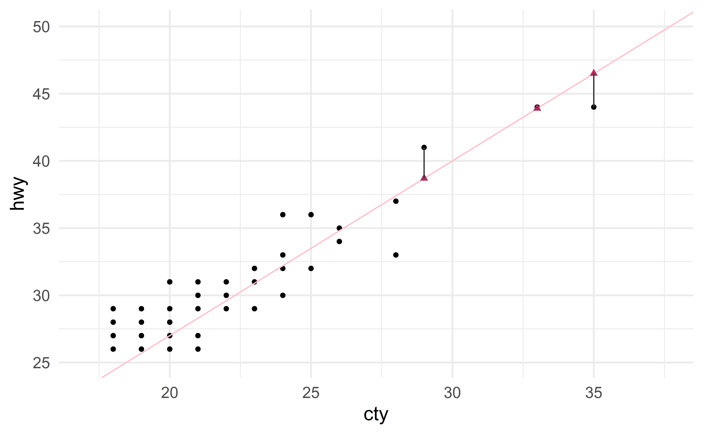
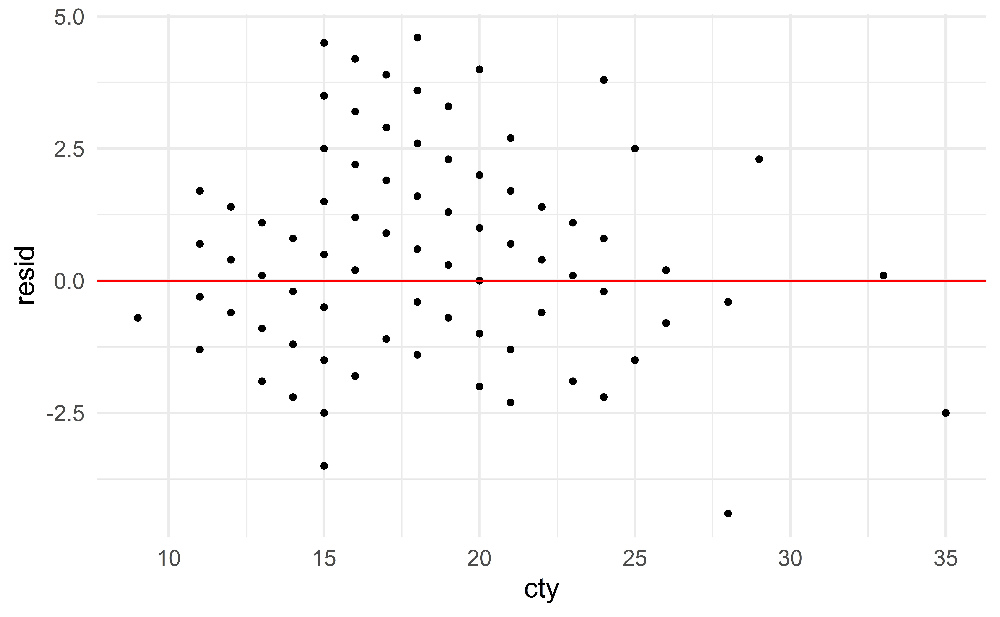
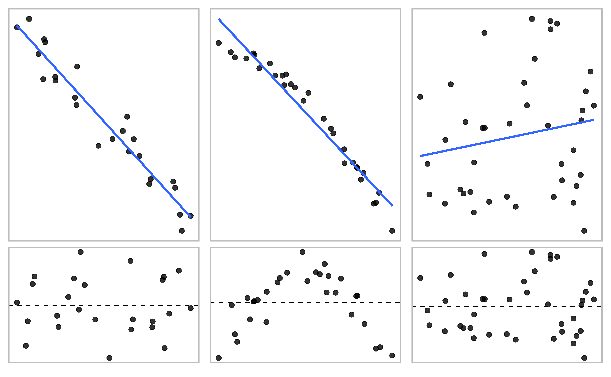
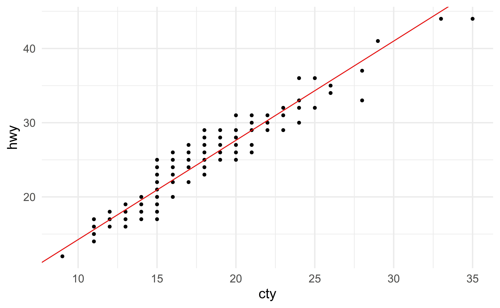
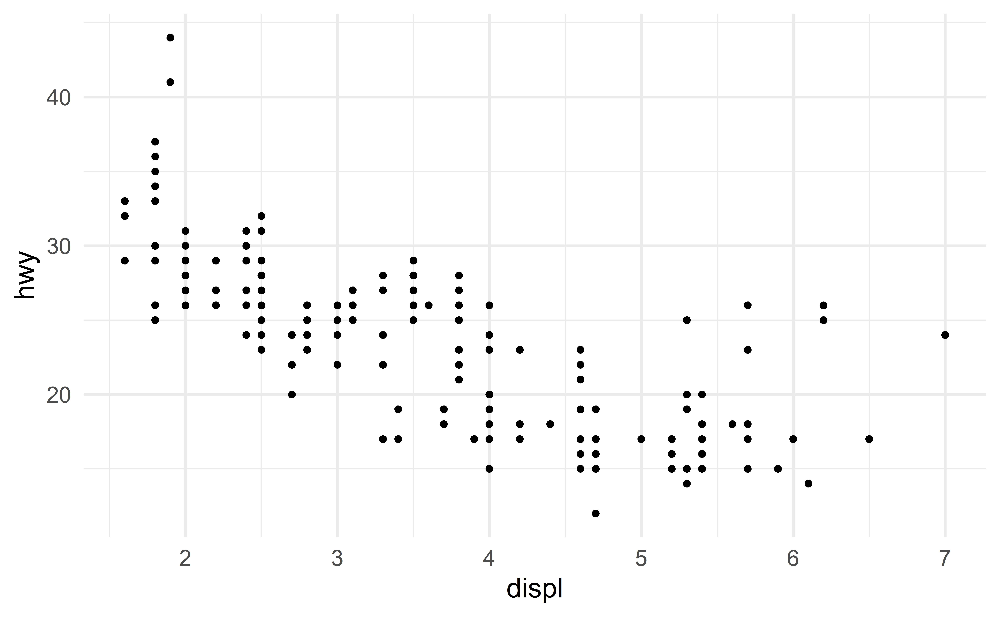
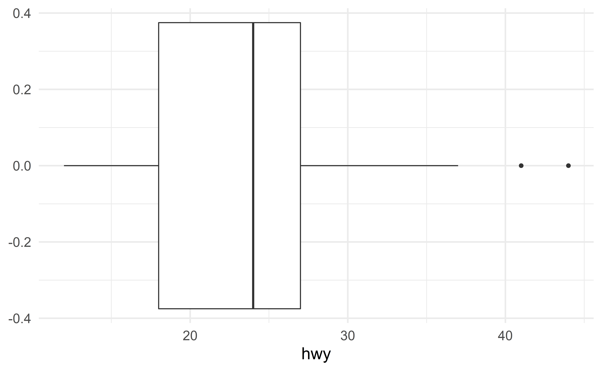
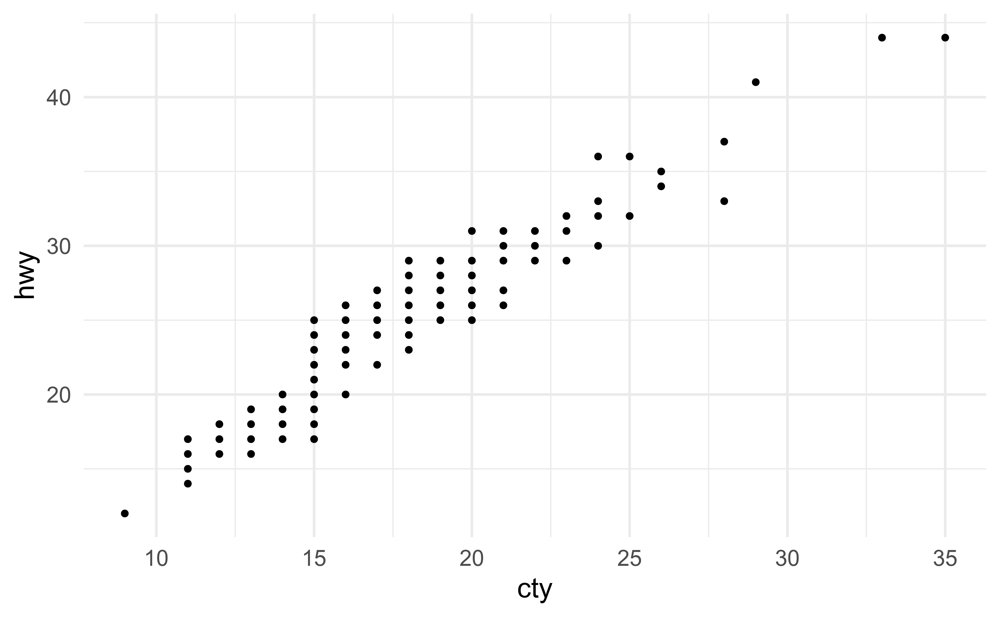

# A tibble: 4 x 11
manufacturer model displ year cyl trans drv cty hwy fl class
<chr> <chr> <dbl> <int> <int> <chr> <chr> <int> <int> <chr> <chr>
1 audi a4 1.8 1999 4 auto(l5) f 18 29 p compa~
2 audi a4 1.8 1999 4 manual(m5) f 21 29 p compa~
3 audi a4 2 2008 4 manual(m6) f 20 31 p compa~
4 audi a4 2 2008 4 auto(av) f 21 30 p compa~Simple Linear Regression Models
STA 101L - Summer I 2022
Raphael Morsomme
Welcome
Announcements
- Find someone you have not worked with yet.
- Homework 1 has been released
Ask us if anything is unclear
regrade window of 48 hours.
- Homework 2 has been published
- Due on Wednesday (tomorrow)
- Feel free to re-use the template from HW 1
- There should be no need for external code – look in the lab!
Recap of last lecture
- Histogram, scatterplot, boxplot
- Average, median, variance, sd and IQR; robustness
- Frequency, contigency and proportion tables
- Barplot, mosaic plot
- Effective communication: well-edited figures, \(\ge3\) variables (symbols, colors, facets)
- R for Data Science - chapters 3 and 7
Outline
- simple linear regression model
- least-square estimates
- model comparison
- outliers
Simple linear regression
Regression model
Suppose the variable hwy (fuel efficiency on highway) is very expensive to measure.
We decide to estimate it using the other variables. To do so, we will fit a regression model.
\[ \text{hwy} \approx \text{model}(\text{other variables}) \]
Simple regression
We expect the variable cty to be a good proxy for hwy.
After all, if a car is efficient in the city, we expect it to also be efficient on the highway! We will therefore consider a simple regression model
\[ \text{hwy} \approx \text{model}(\text{cty}) \] Simple here means that we include a single predictor in the model.
Simple linear regression

The variables cty and hwy are linearly associated.
We therefore opt for a simple linear regression model
\[ \text{hwy} \approx \beta_0 + \beta_1 \text{cty} \]
Parameters
The numbers \(\beta_0\) and \(\beta_1\) are the two parameters of the model.
We now want to find good values for these unknown parameters.
Let us look at two sets of values:
\[\begin{align*} \beta_0 = 1, \beta_1 = 1.3 \qquad & \Rightarrow \qquad \text{hwy} \approx 1 + 1.3 \text{cty} \\ \beta_0 = 15, \beta_1 = 0.5 \qquad & \Rightarrow \qquad \text{hwy} \approx 15 + 0.5 \text{cty} \end{align*}\]Prediction
We can use our models to estimate hwy for new vehicles.
Imagine there is a new vehicle with \(\text{cty} = 30\). Instead of measuring its hwy (expensive), we use our model to estimate it. Using the “good” model gives the following estimate
\[ \begin{align*} \text{hwy} & \approx \beta_0 + \beta_1 \text{cty} \\ & = 1 + 1.3 * 30\\ & = 40 \end{align*} \]
Is this the true hwy of the new vehicle? No!
- this is only an estimate based on the value of the variable
ctyand our “good” model.
Can we do better? Yes!
- Take additional variables into account in the model (e.g. engine size, vehicle age, etc)
- Use better values for \(\beta_0\) and \(\beta_1\).
Group exercise - parameters
What is the prediction for the new vehicle (\(\text{cty} = 30\)) if we use the bad model (\(\beta_0 = 15, \beta_1=0.5\))?
Copy and paste the following piece of code and try different values for the parameters to find a good set of values.
05:00
Linear association
A simple linear regression model is only applicable if the relation between the predictor and the response is linear.
If the relation is not linear, the simple linear regression is not suitable.
In this case, we need to model the non-linearity (next lecture).
Group exercise - linear association
Exercise 7.3
03:00
Leat-square estimates
Residuals
Our predictions are only approximate.
- Let us represent our prediction with \(\widehat{\text{hwy}}\) and the true value with \(\text{hwy}\)
- the error we make is \(\text{hw} - \widehat{\text{hwy}}\)
- this is called the residual
\[e = \text{hwy} - \widehat{\text{hwy}}\]
Visualizing residuals
- Black circles: Observed values (\(\text{hwy}\))
- Pink solid line: Least-squares regression line
- Maroon triangles: Predicted values (\(\widehat{\text{hwy}}\))
- Gray lines: Residuals

Residual plot
Assessing linearity with residual plots
Source: IMS
05:00
Good estimates
We want to choose estimates that give a model that fits the data well.
- a model with a regression line that is close to the data
We want to minimize the residuals.
Minimizing residuals
Perhaps the most natural thing to do is to find the values of \(\beta_0\) and \(\beta_1\) that minimize the sum of absolute residuals
\[ |e_1|+|e_2|+\dots+|e_n| \]
For practical reasons, the sum of squared residuals (SSR) is a more common criterion
\[ e_1^2+e_2^2+\dots+e_n^2 \]
Why squaring the residuals?
- nice mathematical properties
- can work by hand (pre-computer era; first derived by Gauss in the late 1700s (Stigler, 1981))
- reflects the assumptions that being off by \(4\) is more than twice as bad as being off by \(2\)
- mainstream, e.g. the command
lminR.
Least-square estimates
We simply find the values for \(\beta_0\) and \(\beta_1\) that minimize the SSR with the R command lm
Call:
lm(formula = hwy ~ cty, data = d)
Coefficients:
(Intercept) cty
0.892 1.337 The symbols \(\hat{\beta}_0\) and \(\hat{\beta}_1\) denote least-square estimates.
In our model, we therefore have \[\hat{\beta}_0 = 0.892, \qquad \hat{\beta}_1 = 1.337\]
Visualizing the least square regression line
Reading R output
R can provide the results of a model in different formats.
Printing the model itself provides the least-square estimates. This is sufficient for now.
Call:
lm(formula = hwy ~ cty, data = d)
Residuals:
Min 1Q Median 3Q Max
-5.3408 -1.2790 0.0214 1.0338 4.0461
Coefficients:
Estimate Std. Error t value Pr(>|t|)
(Intercept) 0.89204 0.46895 1.902 0.0584 .
cty 1.33746 0.02697 49.585 <2e-16 ***
---
Signif. codes: 0 '***' 0.001 '**' 0.01 '*' 0.05 '.' 0.1 ' ' 1
Residual standard error: 1.752 on 232 degrees of freedom
Multiple R-squared: 0.9138, Adjusted R-squared: 0.9134
F-statistic: 2459 on 1 and 232 DF, p-value: < 2.2e-16This format contains information that will be useful when we do inference. It is, however, difficult to read.
Exploring the model
The command augment from the R package broom gives us the residuals (.resid) and predictions (.fitted).
# A tibble: 234 x 4
hwy cty .fitted .resid
<int> <int> <dbl> <dbl>
1 29 18 25.0 4.03
2 29 21 29.0 0.0214
3 31 20 27.6 3.36
4 30 21 29.0 1.02
5 26 16 22.3 3.71
6 26 18 25.0 1.03
7 27 18 25.0 2.03
8 26 18 25.0 1.03
9 25 16 22.3 2.71
10 28 20 27.6 0.359
# ... with 224 more rowsGroup exercise - exploring a model
Consider the third observation in the sample. What is its
- value of
cty? - predicted value for
hwybased on the model? - actual value for
hwy? - residual?
- Does the model over- or under-predict?
03:00
Intepreting the parameters
- the intercept estimate \(\hat{\beta}_0\) is the prediction for a car with \(\text{cty} = 0\)
- meaningless in our case
- the slope estimate \(\hat{\beta}_1\) is the increase in a our prediction for
hwyfor each additional unit ofcty- “for each additional unit of
cty, we expecthwyto increase by 1.337”
- “for each additional unit of
Extrapolation
- Stick to the range of the data
- if you extrapolate, do so with care, not like this.
- The intercept will not always be meaningful
Group exercise - least-square estimates
Exercise 7.21
- skip part c
- start by fitting the model in
Rwith the following command,
05:00
Special case: categorical predictor
Let us create a binary predictor indicating if the car is from \(1999\).
d_binary <- mutate(d, year_binary = if_else(year == 1999, 1, 0))
head(select(d_binary, hwy, year, year_binary))# A tibble: 6 x 3
hwy year year_binary
<int> <int> <dbl>
1 29 1999 1
2 29 1999 1
3 31 2008 0
4 30 2008 0
5 26 1999 1
6 26 1999 1The variable year_binary takes the value \(1\) if the car is from \(1999\) and \(0\) otherwise.
Call:
lm(formula = hwy ~ year_binary, data = d_binary)
Coefficients:
(Intercept) year_binary
23.45299 -0.02564 The model equation is
\[ \text{hwy} \approx 23.46 - 0.026 \text{year_binary} \]
For a new car from \(1999\), the variable year_binary takes the value \(1\) and our prediction is
\[ \widehat{\text{hwy}} = 23.46 - 0.026*1 = 23.46 - 0.026 = 23.434 \]
While for a car that not from \(1999\), the variable year_binary takes the value \(0\) and our prediction is
\[ \widehat{\text{hwy}} = 23.46 - 0.026*0 = 23.46 - 0 = 23.46 \]
Model comparison
Alternative model
Let us fit an alternative model using engine size (disp) as a predictor
\[ \text{hwy} \approx \beta_0 + \beta_1 \text{displ} \]
The least-square estimates for the coefficients are
Call:
lm(formula = hwy ~ displ, data = d)
Coefficients:
(Intercept) displ
35.698 -3.531 Note that the slope coefficient is negative; which makes sense since we would expect cars with larger engines to be less efficient.
We now have two models. Which is the best?
- We could start by looking at the residuals
Comparing residuals
The first model seems to have smaller residuals.
\(\Rightarrow\) choose the first model!
Comparing models in a systematic way
But looking at a plot can be misleading
illusions
difficult to compare models with similar residuals
We need a more systematic approach for comparing models.
SSR
Instead of comparing histograms of residuals, we can compute the SSR (sum of squared residuals!)
\[\begin{align*} SSR & = r_1^2+r_2^2+\dots+r^2_n \\ & = (y_1 - \hat{y}_1)^2 + (y_2 - \hat{y}_2)^2 + \dots + (y_n - \hat{y}_n)^2 \end{align*}\]small residuals will give a small SSR
large residuals will give a large SSR
\(\Rightarrow\) choose the model with the smaller SSR!
📋 The textbook uses the term SSE (sum of squared errors).
SSR of the first model:
[1] 712.3599SSR of the second model:
We opt for the first model (smaller SSR).
\(R^2\)
While the SSR is useful for comparing models, it can also be used to describe the goodness of fit of the model.
The SST (total sum of squares) is the sum of squared distance to the mean.
\[ SST = (y_1 - \bar{y})^2 + (y_2 - \bar{y})^2 + \dots + (y_n - \bar{y})^2 \]
It measures the total amount of variability in the data.
Remember the formula for SSR
\[ SSR = (y_1 - \hat{y}_1)^2 + (y_2 - \hat{y}_2)^2 + \dots + (y_n - \hat{y}_n)^2 \]
It measures the amount of variability in the data left unexplained by the model.
\(SST - SSR\) (total - residual) is therefore the amount of variation explained by the model:
\[ \text{data} = SST = (SST-SSR) + SSR = \text{model} + \text{residuals} \]
The statistic \(R^2\) measures the proportion of variation in the data that is explained by the model.
\[ \begin{align*} R^2 & = 1-\dfrac{SSR}{SST}\\ & = \dfrac{SST-SSR}{SST} \\ & = \dfrac{\text{var. explained by model}}{\text{total var.}} \end{align*} \]
Note that \(0\le R^2 \le 1\).
- good model \(\Rightarrow\) small residuals \(\Rightarrow\) small SSR \(\Rightarrow\) large \(R^2\).
- great model \(\Rightarrow\) tiny residuals \(\Rightarrow\) tiny SSR \(\Rightarrow\) \(R^2\) close to 1.
- poor model \(\Rightarrow\) large residuals \(\Rightarrow\) SSR almost as large as SST \(\Rightarrow\) \(R^2\) close to 0.
Computing \(R^2\) in R
To compute \(R^2\) in R, simply use the command glance.
[1] 0.9137752[1] 0.5867867The model with cty as a predictor has a \(R^2\) value of \(0.914\), and the model that uses displ has a \(R^2\) of \(0.59\) (worse).
The first model is better!
Group exercise - Interpretation
- Exercise 7.23
- fit the model in
R; do you obtain the same estimates? - do parts a-d
- compute the SST, SSR and \(R^2\) “by hand” in
R(do not useglance). You can use the commandaugmentto compute the residuals.
- fit the model in
05:00
Outliers
Outliers in regression
Remember, in a boxplot, outliers are observations far from the bulk of the data
In the context of regression models, an outlier is an observation that falls far from the cloud of points
Identifying outliers
In the following scatterplot, we see two outliers
Group exercise - outlier in regression
Exercise 7.25
02:00
Outliers, leverage and influential points
outliers: observations that fall far from the cloud of points;
high leverage points: observations that fall horizontally away from the cloud of points;
influential points: observations that influence the slope of the regression line;
All influential points are high leverage points.
All leverage points are outliers.
(Venn Diagram)
Source: IMS
Group exercise - outlier
Exercise 7.27
03:00
Least-square estimates are not robust
In regression, outliers have the potential to highly influence the least-square estimates \(\hat{\beta}_0\) and \(\hat{\beta}_1\).
Warning
Least-square estimates are not robust to the presence of outliers.
Estimates that are robust include (not covered in this class)
- least absolute deviation estimates, which minimize the SAR (sum of absolute residuals) instead of the SSR
\[ SAR = |e_1| + |e_2| + \dots + |e_n| \]
- Bayesian estimates (STA360)
Impact of outliers
Let us contaminate the data with an outlier (cty \(=10\) and hwy \(=1000\))
…and compare the two regression models.
Call:
lm(formula = hwy ~ cty, data = d)
Coefficients:
(Intercept) cty
0.892 1.337
Call:
lm(formula = hwy ~ cty, data = d_contaminated)
Coefficients:
(Intercept) cty
-33.841 3.498 The slope estimate has almost tripled!
The regression line not longer fits the data well.
Statistics as an art - dealing with outliers
Dealing with outliers
Outliers can unduly influence parameter estimates. How to deal with an outlier depends on why the observation stands out. Outliers can either be
- removed
- corrected
- ignored
Recap
Recap
- simple linear regression model
\[ \text{hwy} \approx \beta_0 + \beta_1 \text{cty} \]
- residuals
- least-square estimates
- parameter interpretation
- model comparison with \(R^2\)
- outliers